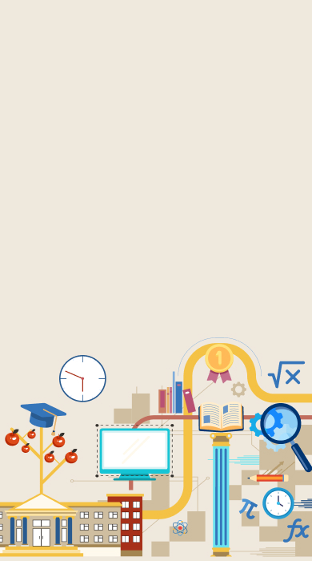

Modul
Pembelajaran
Masteri
Mulakan Modul
Modul
Pembelajaran
Masteri
Mulakan Modul
Modul
Pembelajaran
Masteri
Mulakan Modul

Indeks
1.0 Mengenai Pembelajaran Masteri
1.1 Pengenalan Pembelajaran Masteri
1.2 Matlamat dan Objektif Pembelajaran Masteri
1.3 Apakah Pembelajaran Masteri?
2.0 Metodologi Pembelajaran Masteri
2.1 Ciri-Ciri Pembelajaran Masteri
2.2 Prinsip Asas Pembelajaran Masteri
2.3 Kepentingan Pembelajaran Masteri
2.4 Proses Pelaksanaan Pembelajaran Masteri
2.5 Peranan Guru Dalam Pembelajaran Masteri
3.0 Contoh Pembelajaran Masteri dalam Pengajaran dan Pembelajaran (PdP)
3.1 Matematik Awal Prasekolah
3.2 Bahasa Melayu Sekolah Rendah
3.3 Sains Sekolah Rendah
3.4 Pendidikan Seni Visual Sekolah Rendah
3.5 Sejarah Sekolah Menengah
3.6 Geografi Sekolah Menengah
3.7 Ekonomi Sekolah Menengah
3.8 Matematik Pendidikan Khas Sekolah Menengah
4.0 Video Penerangan Umum Modul Pembelajaran Masteri
5.0 Bahan Siri BSBPK 2022